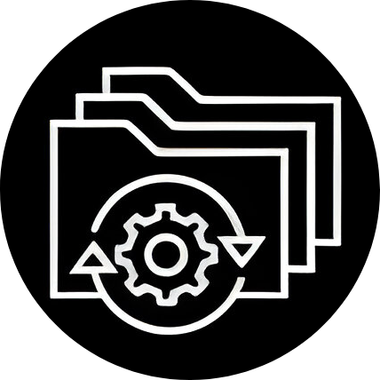

En el amanecer del siglo XXI, la Gran Pangea dio a luz a Yuno, una utopía futurista cuyo fulgor prometía un cambio transcendental para la humanidad. Sin embargo, dos décadas después, la promesa de igualdad y prosperidad se desvaneció. Yuno, inicialmente cuna de esperanzas, se transformó en un bastión de desigualdad. Las élites políticas, seducidas por la riqueza, desviaron su lealtad del pueblo hacia intereses propios.
El proyecto A.D.4.M., con sus robots impulsados por el revolucionario Nano-Cortex 3000, se forjó como emblema de progreso, pero tras sus brillantes fachadas, ocultaba la corrupción y la conspiración.
La brecha entre distritos se ensanchó, sumiendo a las masas en la pobreza,
mientras la élite encabezada por el presidente del país, Orión Blaze, se enriquecía.
Los "Fierros Salvajes" emergen como la chispa de resistencia, desafiando a un gobierno decadente.
Los "Hollowghosts",
un grupo clandestino que atraviesa las líneas de clases sociales pero ocultos entre las sombras.
Unidos por un objetivo en común, tienen en el foco de luz en esta ocasión tan estrambótica.

Fierros Salvajes
Hollowghosts
Personajes
Vanessa Hedges:
Una mujer de la clase alta, dueña de una importante empresa de tecnología que fabrica robots de cualquier clase para el servicio de la sociedad. Valentina es fría y calculadora, siempre mirando por su propio beneficio y el de su clase social.
Ingeniera en robótica
Marko "The Wolf" Scott:
Proveniente de la clase media, Marko es un ingeniero que trabaja en mantenimiento de los robots de armamento y ataque en una delegación del gobierno de día y miembro de noche en la banda de los "Hollowghosts" vendiendo información. Ayuda derrocando el sistema.
Artillero
Sol Fender:
Una joven de la clase baja, Sol pertenece a la banda de los "Hollowghosts", un grupo que lucha por los derechos de los desplazados y oprimidos. Es hábil en el arte de la piratería informática y utiliza sus habilidades para desafiar el sistema opresor.
Hacker
AD4M:
Un robot con inteligencia artificial avanzada, diseñado para servir a la clase alta. A pesar de estar programado para obedecer las órdenes de los humanos, el automata de 4 motores empieza a cuestionar su posición en la sociedad y a tomar conciencia de su propia identidad.
Robot
Selena Salvaje:
Líder de los Fierros Salvajes, es la voz valiente del Barrio Bajo de Yuno. Dotada de habilidades mecánicas y estratégicas, guía la resistencia contra un gobierno opresor. Su historia personal la conecta con la lucha por la justicia social, siendo el faro de esperanza para los oprimidos.
Líder
Daniel Combs:
Un joven de la clase media que, a pesar de tener oportunidades para unirse a la clase alta, decide unirse a la causa de los "Fierros Salvajes" para luchar por la justicia social y la igualdad entre las distintas clases sociales. Su conocimiento en ingeniería lo convierte en un valioso activo para la banda.
Inventor
La ciudad de Yuno
Yuno, fundada en 2025 por la Gran Pangea, fue inicialmente concebida como un faro de esperanza para el mundo, prometiendo un cambio significativo y un lugar donde la gente quisiera nacer y vivir.
En sus primeros años, la ciudad progresó rápidamente, adelantando a otras metrópolis en modernidad y diversidad cultural.
Sin embargo, tras dos décadas, la ciudad se desvió de su idea original. Sus representantes y políticos, atraídos por el dinero, forjaron alianzas con empresas para vender la tecnología de Yuno al mundo.
Surgió el Proyecto A.D.4.M. , robots con inteligencia artificial impulsados por su principal componente, el Nano-Cortex 3000.
A medida que la brecha de clases crecía, Yuno cambió su imagen hacia el mundo, aparentando estabilidad política y prosperidad para no alertar a la nación de países y así poder seguir operando en la oscuridad.
La ciudad está dividida en dos distritos principales:
Distrito Aurora:
Punta Aurora: Epicentro financiero con rascacielos y centros de negocios.
Las Alturas: Barrio residencial de élite en colinas al norte.
Helix Nexus: Barrio al oeste con laboratorios y empresas tecnológicas.
Paradisium: Zona al este con jardines futuristas y sede policial.
Distrito Arribal:
Barrio Bohemio: Hogar de artistas y músicos.
Barrio Industrial: Centro de creación y ensamblaje de AD4Ms.
Barrio Bajo: Sumido en la pobreza, afectado por drogas como el Nexilium.
Disputa
La brecha entre los distritos prósperos, como Aurora, y los empobrecidos, como Arribal, ha alcanzado niveles extremos.
La discriminación y la falta de oportunidades para los residentes de los barrios más pobres han creado una sociedad dividida.
Los líderes y políticos de Yuno, una vez comprometidos con la idea de un cambio positivo,
se han corrompido en su búsqueda de poder y riqueza y los yunenses han perdido la fe en el gobierno.
Ante la opresión y la falta de esperanza, los Fierros Salvajes emergen como una facción que busca resistir y rebelarse contra el gobierno corrupto.
La historia explora la vida de varios personajes, cada uno representando una perspectiva única en la sociedad de Yuno.
La disputa se centra en la lucha por la justicia, la igualdad y el cambio en una sociedad donde los intereses personales y la corrupción amenazan con socavar cualquier posibilidad de un futuro equitativo para todos.
La disputa entre los "Fierros Salvajes" y el gobierno acaba de empezar.
Las dos bandas, los Hollow y los Fierros, están negociando una tregua para adueñarse de Yuno y de todas las riquezas del gobierno mundial.